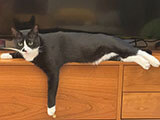

Superstar
Xiuxiu
Age: 3 years old
Breed: Orange
Fur: Calico with patches of orange, white, and black
Hobbies: Sleeping with human, Eating bread
Xiuxiu is our playful orange who loves to chase anything that moves. He's also a big fan of cuddles and will happily curl up in your lap for a nap.

Huabi
Age: 3 years old
Breed: Shorthair
Fur: Black and white tuxedo
Hobbies: Do Evil
He'll observe the goings-on of the cafe with regal indifference, occasionally gracing you with a flick of her tail or a soft purr.

Meili
Age: 5 years old
Breed: Ragdoll
Fur: Brown tabby with white markings on the chest, belly, and paws.
Hobbies: Lounging in sunbeams, chasing toys
He'll greet you with a slow blink and a flick of his tail, then settle into a cozy spot to watch the world go by.
Pipi
Age: 2 years old
Breed: Cow
Fur: Black and white, with a mostly black body and white markings on the face, chest, belly, and legs
Hobbies: Playing with toys, climbing furniture
Pipi is our playful cow with a mischievous streak. He'll zip around the cafe with his little black bobtail held high, always up for a game or a cuddle
